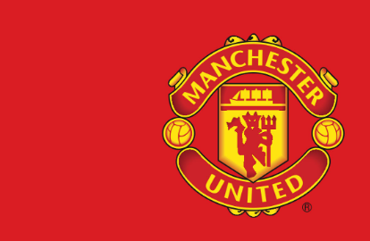
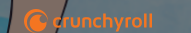

| Name: | Aws Alsamka |
| Address: | Rubenslei 35 bus 007, Antwerpen 2018 |
| Tel.: | 0488 88 39 12 |
| E-mail: | Aws.Alsamka@student.vives.be |
foto niet vergeten!!!!!!!!!!!!!
| Hoppy 1 | Hoppy 2 | hoppy 3 | ||||||
|---|---|---|---|---|---|---|---|---|
Lezen |
Ik hou van boeken en manga's lezen. Mijn favorite manga op dit moment is One Piece. |
Gamen |
In weekend wanneer ik tijd het zit ik graag met mijn vrienden te game. Ik speel vaak op mijn PC en soms op PS5. |
Koken |
Ik kook graag voor mijn vrienden en famlie maar niet voor idereen.
Ik vind Syrische gerechte beste gerechten voor me. |
Waar ik manga lees | Mijn favorite spel momenteel | Recipe van een soort van syrische eten |
| Favorite sport | Voetbal | Engelse voetbal ploeg in Engeland. Link voor de ploeg webshop |
 |
| Favorite anime | One Piece | Beste anime ooit voor me. Dit kijk ik en volg ik sinds ik 10 jaar was. Web Voor kijken |
 |